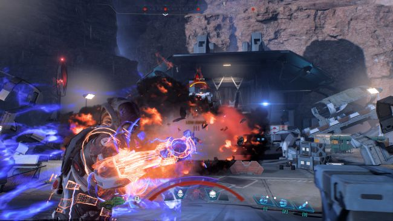

MASS EFFECT: ANDROMEDA
Ten years ago, the first Mass Effect packed a season's worth of TV sci-fi into a game and put you in the role of director and lead character. Its sequels took your decisions and spun them into series-spanning arcs, held onto the characters you liked and built deep relationships around them. There is a reason that Shepard's trilogy means as much as it does to so many people..
Mass Effect's five year absence has been kind to the series, softening the memory of the third act's controversial finale and the faltering journey that was taken to get there. Andromeda resets that journey to its beginning, for better and for worse. This is a new Mass Effect with all that the name entails: a game of sci-fi combat, talking, fetch quests, tough choices, talking, exploration, relationships, and more talking.

Here's the setup: in 2185, during the events of Mass Effect 2, a private exploration effort called the Andromeda Initiative packs four ark ships full of cryo-frozen colonists and points them at the Andromeda galaxy. Each ark has its own Pathfinder, a skilled operative who has been paired with an ability-enhancing AI called SAM. The Pathfinder for the human ark, Alec Ryder, brings his adult son and daughter with him. Your choice of gender at the beginning of the game determines which Ryder kid you play.
Yet I'm also aware that when I'm in Mass Effect's zone a lot of these dry pros and cons don't seem to matter as much. This is a series that has always been good at getting under your skin, that has built its reputation on the moments when all of those disparate elements, good and bad, cohere into an adventure that feels like it's happening to you. Andromeda can still do that. It's not perfect. It's not consistent. But for a story about vast journeys and fresh starts, it also feels a little like coming home.
Other Reviews
THE HUNTER: CALL OF THE WILD

DESYNC

NIER: AUTOMATA

GHOST RECON WILDLANDS